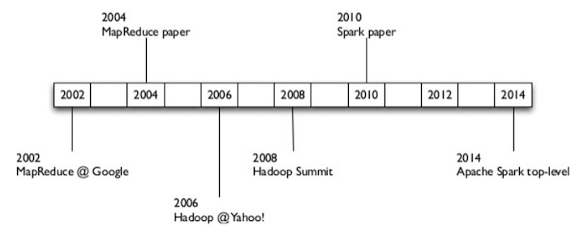
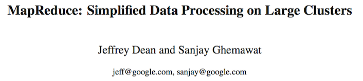
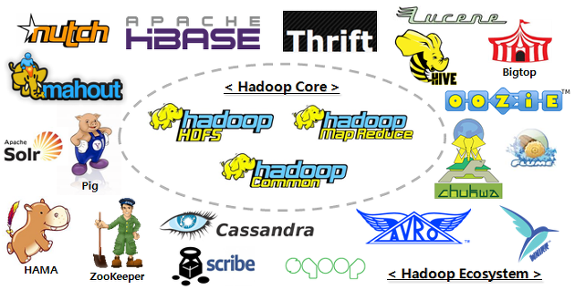
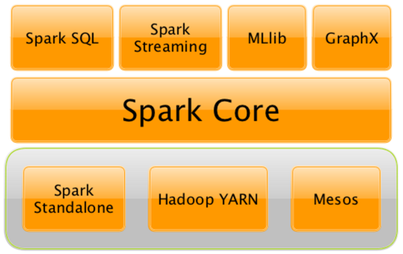

{chris, jason}@datascience.com
Spark extends the popular MapReduce model to efficiently support a wider range of computations.

https://medium.com/@markobonaci/the-history-of-hadoop-68984a11704
started w/ Backus' Fortran 1.0 in 1997. parallel processing only done on expensive supercomputers. complex and not robust to node failures.

combined FP primitives with world-class cluster computing know-how. the simple MR framework (read Backus) meant that all of a sudden it became relatively simple and reliable to compute with large arrays of cheap nodes, any of which might fail. these guys are legends. they are also behind tensorFlow.

open source MapReduce. became a top level apache project in 2006. batched processing. static pageRank anecdote. by 2006 google had already moved on to streaming.
Both Scala projects. Came out of LinkedIn and Berekley's AmpLabs respectively. Framework and language have converged. Scala Collections API, Spark API, Scalding API, Kafka API are almost identical.

Basic functionality of Spark: task scheduling, memory management, fault recovery, interacting with storage systems, etc. $$ $$ RDD API will be our point of departure in this course.
Spark can run over a variety of cluster managers, including Hadoop YARN, Apache Mesos, and a Spark's native Standalone Scheduler.
Spark’s package for working with structured data (DataFrames) and semi-structured data (DataSets).
Spark Streaming is a Spark component that enables processing of live streams of data.
GraphX is a library for manipulating graphs and performing graph-parallel computations.
We will cover these in the Methods class.
Spark's machine learning library.
We will cover MLlib in the Models class.
Higher-level components in the stack benefit from improvements at the lower layers
Organizational costs associated with running the stack are minimized
Combine different processing models
For example, when Spark’s core engine adds an optimization, SQL and machine learning libraries automatically speed up as well. These costs include deployment, maintenance, testing, support, and others. This also means that each time a new component is added to the Spark stack, every organization that uses Spark will immediately be able to try this new component.
In the big data & machine learning world where most developers are from Python/R/Matlab background, Scala's syntax, or the subset needed for the domain, is a lot less intimidating than that of Java or C++.
In my experience, basic syntax collections API and lambda (about 20% of the language features) is all that's needed for a new hire with no prior experience to become productive in processing data.
At the same time, performance is usually better than traditional tools like Python or R. As one's skill develops over time, there's a clear transition path from imperative to more elegant FP style code while maintaining or even improving performance.
The chart below clearly shows the growth of our main scalding repository over time. We spent a few months experimenting and after doubling the team size in early 2014, the number of jobs and LOC also exploded. Most developers have little Scala or even Java experience and some of the jobs are doing complex machine learning stuff.
Scala also integrates well with the big data eco-system, which is mostly JVM based.
In addition to Scala-native frameworks like Spark and Kafka, there are many frameworks on top of Java libraries like Scalding (Cascading), Algebird / Summingbird (Scalding and Storm), Scrunch (Crunch), and Flink (Java core with Scala API).
The Scala APIs are usually more flexible than say Hadoop streaming with Python/Perl, PySpark or Python/Ruby bolts in Storm, since you have direct access to the underlying API.
There are also a wide range of data storage solutions that are built for or work well with JVM like Cassandra, HBase, Voldemort and Datomic.
A third benefit is the functional paradigm which fits well within the Map/Reduce and big data model.
Batch processing works on top of immutable data, transforms with map and reduce operations, and generates new copies. Real time log streams are essentially lazy streams.
Most Scala data frameworks have the notion of some abstract data type that's extremely consistent with Scala's collection API.
Glance at TypedPipe in Scalding and RDD in Spark, and you'll see that they all have the same set of methods, e.g. map, flatMap, filter, reduce, fold and groupBy.
Many libraries also have frequent reference of category theory (eg monoids, monads, applicative functors etc) to guarantee the correctness of distributed operations.
Equipped such knowledge it'll be a lot easier to understand techniques like map-side reduce.
At a high level, every Spark application consists of a driver program that launches various parallel operations on a cluster.
The driver program contains your application’s main function and defines distributed datasets on the cluster, then applies operations to them.
In zeppelin, the driver program was the Spark interpreter itself.
Driver programs access Spark through a SparkContext object, which represents a connection to a computing cluster.
| Table of Contents | t |
|---|---|
| Exposé | ESC |
| Full screen slides | e |
| Presenter View | p |
| Source Files | s |
| Slide Numbers | n |
| Toggle screen blanking | b |
| Show/hide slide context | c |
| Notes | 2 |
| Help | h |